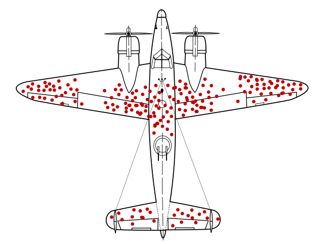
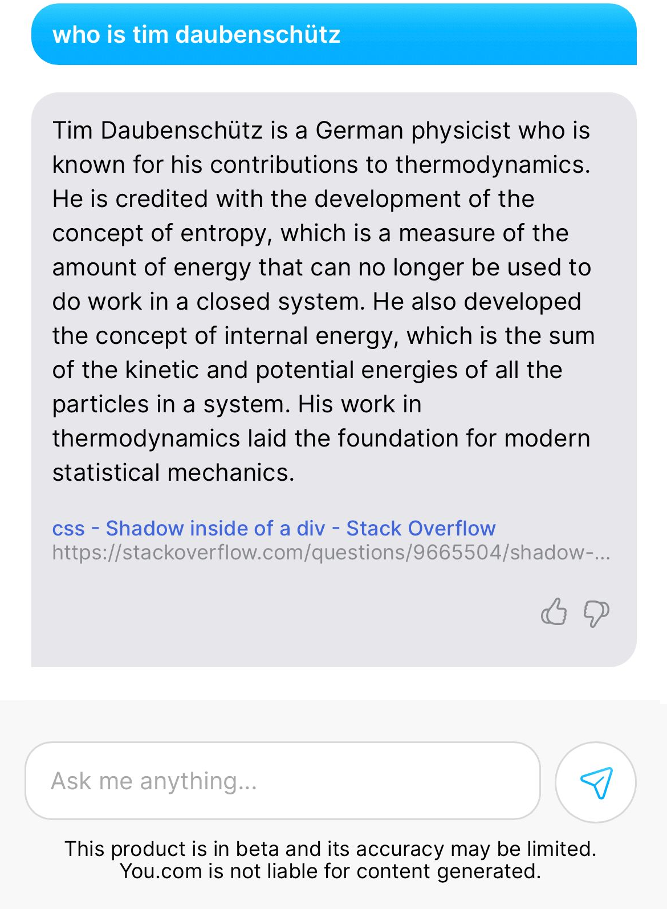

With this write-up, I want to outline my current thinking around large language models like OpenAI's chatGPT.
As many people have made claims about the potential of this technology, in the following, I'm going to make my claims too, so that I might be proven right or wrong later.
In general, I think the current LLM discourse needs more nuance. On podcasts and in blog posts I always seem to identify one line of reasoning and it is too optimistic for my taste. So here are some points that I find under-developed in the discussion.
The hallmark of a bubble are its investors' inflated expectations given what said technology can achieve. This becomes clear when enumerating Carlota Perez's list of technological advancements and their ensuing market manias. It consists of (1) the industrial revolution, (2) the steam engine, (3) the age of electricity, (4) the oil boom and (5) the dawn of the information revolution.
In hindsight, clearly none of the five technologies are fads. Instead, the crowd was mad. A certain bubble's hallmark, hence, isn't the technology's potential - it's the investors' inflated expectations.
In recent history, this is exemplified in a quote from Marc Andreessen, saying that, "[in tech] timing is everything," with him alluding to the observation that we can now buy dog food online, despite pets.com having been the tech industry's laughing stock for two decades.
So while LLMs are furthering our dreams of what AI could become one day, with investor's false expectations, the public discourse reached the peak of the Gartner's Hype Cycle.
In deceiving the masses, social media played an important role as the promoter of a large logical error, that of an enormous survivorship bias.
When ChatGPT entered the timelines a month ago, content aggregators like Twitter, bubbled up the most engaging conversations of users and the model.
But only those that users liked and retweeted ended up circulating, which contributed to a strange spread between a users' expectations and experiences they had when first talking to chatGPT.
While personally, the experience lived up to some of the hype, social media claims of it implementing entire front ends turned out to be fake. Clearly, this models performs well on in-sample tasks, and is far off on anything else.
But with Twitter's engagement algorithm optimized for promoting the most outrageous AI conversations, it is not possible to get an reasonable overview of chatGPT's actual performance.
We're collectively experiencing survivorship bias as we are drawn to interpret the ingenuity of chatGPT's answers shared on social media, rather than our own experiences.
Like with horoscopes, with thousands of "genious" chat logs uploaded every day, those that survive Twitter's algorithm and bubble up are truly stunning.
During last year's crypto currency bull market, a key criticism was (and is) that the environmental costs of Proof of Work and the economic costs of Proof of Stake are too high. The opponents' view is, hence, that web3 isn't faster, cheaper and better than web2, which results in a lack of meaningful benefits to web3's users. If transactions are costly and slow, then why would a "blockchain Twitter" ever outperform a "database Twitter."
And this line of reasoning is interesting, because it originates from the reasonable idea that the cost of running software is marginal to its production. Having paid software engineers myself, as well as cloud provider bills, I can say that, in many projects, one engineer's hour is equal to the entire project's server bills for a month. Technically, running software is free, and creating it isn't.
So then, with crypto currencies' immense security budget spending and Sam Altman confirming that chatGPT's computation costs are eye-watering, I'm now wondering if the idea of running software as a marginal cost is history.
While there exist no official data on OpenAI's cost to run chatGPT, there are plenty of estimates ball-parking computation costs based on the model's number of parameters [1, 2, 3, 4].
| Parameters | Tokens | Cost in USD |
|---|---|---|
| 1.3B | 26B | 2k |
| 2.7B | 54B | 6k |
| 6.7B | 1.34T | 30k |
| 13B | 2.60T | 100k |
| 30B | 6.1T | 450k |
| 70B | 14T | 2.5M |
| 175B | - | 4.6M |
| 540B | 78T | 23M |
| 1T | - | 100M (own estimate) |
Now, by no means do I have a sound-enough understanding of these economics, but what is notable, is that while the parameter amount in models grows exponentially, so also do the costs. When confronting an AI startup's VP about this trivial (?) observation at a meetup, his answer was that exponential parameter increase would naturally yield exponential cost.
And while that answer seemed convincing, if it is squared with the observation that semiconductor density doubled every two years with chips not doubling in price, I'm questioning if these transformer models will yield returns on investment. After all, the software industry might be caught off-guard, considering that they've historically assumed computation cost to be zero. And so I hope that investors understand what they're buying into*.
Speaking of marginality, when listening to podcasters discussing the technology's potential, a stereotypical assessment is that these models already have a pretty good accuracy, but that with (1) more training, (2) web-browsing support and (3) the capabilities to reference sources, their accuracy problem can be fixed entirely.
I find the psychology remarkable, that goes into these speculations. Arguably, the brightest engineers in the world have already spent countless hours and capital on producing chatGPT. But from a logical point of view, it is unreasonable to me that, identifying these "last-mile" features are viable or applicable. A lot of training has already happened (1), you.com has enabled web-browsing (2), and referencing sources is frankly a task entirely mutual exclusive to the transformer architecture (3).
I don't want to say that these qualities can't or won't be achieved, I'm trying to argue that investors are already pricing in these non-existent features. As a proficent software engineer (with no meaningful experience in ML), there is no way for me to easily tell whether implementing source referencing is an achievable feat within the transformer architecture. And I know how to learn and understand these things fastly.
The capabilities of these models referencing their sources is in my opinion a great example to demonstrate investor's delusions. But first, what are references actually used for?
In this article, in scientific journals and elsewhere, a reference safeguards a author's claim by pointing to an external resource. In all cases, for the claim to work, we assume that claim and reference match. The reference must support the claim.
While this is easily glossed over, referencing is a key component of critical thinking and knowledge production. An academic would happily discuss a paper's references for hours on end, without even attacking the paper's content. It is an art in itself to reference sources and to "take them with a grain of salt." Which makes me particularly surprised that it is considered a "last-mile" effort by many that these transformer models will eventually mimick this behavior well.
If academic papers made false claims through reference, interpreted references wrongly and did so at a significant rate, science would frankly stop working. The affordance of a reference and its respective claim is that it is very likely to be true and that if it isn't, that it is a scandal.
So considering that LLM's are predicting the next token with a low accuracy and don't have a conceptual understanding of what they "read," it is far fetched to assume that they'll make valid claims based on the source material available.
Finally, this argument is also a valid counter point when being sold on chatGPT's capability to summarize verbose texts.
A prompter's intention must be to save time reading the text themselves, which creates a dilemma considering the model's poor trustworthiness and makes me question the promoted productivity gains. After all, if we can't trust the model's outcomes, and we paste-in a to-be-summarized text that we haven't read, then how can we possibly trust the summary without reading the to-be-summarized text?
In Karl Popper's "Open Society and its Enemies," I've come across a well-suited section for a fallacy also observed in AI enthusiasts. As, in this book, he points out the flawed thinking of ideologues, one example is that of so called "spiritual naturalists."
The spiritual naturalist makes no distinction between a physical law and a convention. Popper first points out that there are unchangable rules of nature like the earth revolving around the sun; but that a spiritual naturalist purposefully attaches themselves to the strength of such observation to make their point. For example, they'd say that "capitalism is natural to man, because it is man's nature to compete."
Here, conflating the convention of competition with the class of natural laws like the earth going around the sun, makes the argument appear self-evident. "Man's nature is to compete" and since that's as unchangable as the earth's orbit, we have capitalism as our economic system.
But, of course, convention is entriely changable and I don't have to tell you that humanity managed to survive many centuries without organizing within capitalism.
interesting to me how many of the ChatGPT takes are either "this is AGI" (obviously not close, lol) or "this approach can't really go that much further".
— Sam Altman (@sama) December 3, 2022
trust the exponential. flat looking backwards, vertical looking forwards.
Within the AI crowd, it is possible to observe similar belief systems, particularly when individuals ask us to "trust the exponential," and when it is claimed that those models are small, but that their output knowledge is big.
It's being sold as if talking to chatGPT is like talking to a god-like figure that might have read everyone's messages and emails, to expose it to such important knowledge, that any second, a prompt could lead to the revelation of a genious million-dollar business.
It is clear to me that these opinions are not anchored in reproducible observations. It is entirely unclear whether there is actual original knowledge in chatGPT and other models, and still, we're asked to "trust the exponential."
Considering that the massive data labeling and the fine-tuning processes of OpenAI are a well-kept secret, I'd like to conclude this post with a conspiracy theory of what might modern AI really be.
If there are thousands in this new data-labeling proletariat, and if they are working bullshit jobs to adjust the model's outputs, then how is chatGPT different from, e.g., Amazon's Mechanical Turk? It is different, in that is asynchronizes answer-production and prompting. While Mechanical Turk requires both sides to be online at the same time, a transformer model like chatGPT can be fine tuned later and detached from the time-pressure of an actively prompting user.
I also don't know much about these approaches' backward-compatibility, but remembering back, it's remarkable that Siri and IBM's Watson were also celebrated as break throughs in context-awareness with her inferring from "do I need an umbrella?" to "the user is requesting weather information."
But why aren't Siri and Watson getting smarter? And what really is the value of their weights and biases today?
Considering that we're about to spend $100M in training GPT4 alone, and these models' life span being short, is it fair to say that this is a wasteful practice, considering a better algorithm is found any moment?
Now, as I said in the beginning, I'm not bearish on AI's potential as a technology. But I find it very difficult to get a realistic image of the space with everyone hyping up its potential. And so I hope this article, that highlighted some under-developed points, is useful to others when wanting to form their opinion.
*: Also, the section on exponentially increasing computation costs doesn't
yet factor in the aquisition cost of proprietary data sets which have been
considered the "new oil" for a while now. So even if training gets
computationally cheaper, the aquisition of the exclusive rights to a data set
are going to rise.published on 2023-02-01 by timdaub